| HOME PAGE |
| Spike Density Estimation |
| - Histogram Method |
| - Kernel Method |
| Share it with your friend |
| Tweet |
| HOME PAGE |
| Spike Density Estimation |
| - Histogram Method |
| - Kernel Method |
| Share it with your friend |
| Tweet |
非定常リニューアル過程は変動ポアソン過程の場合を拡張して考えるとわかりやすい. 非定常ポアソン過程と同様に時間伸縮した軸上で定常リニューアル過程を考える. 例として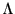上の定常ガンマ過程を考え, そのイベント系列を 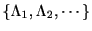とする. イベント間隔 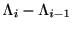が平均が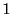, 分散が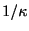である標準ガンマ分布
条件付きスパイク密度分布
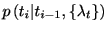を求めよう.
分布
は次のような から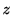への変数変換（タイムリスケーリング）を施すことで,
標準ガンマ分布になるとする. すなわち,
変数変換の公式から
から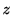への変数変換（タイムリスケーリング）を施すことで,
標準ガンマ分布になるとする. すなわち,
変数変換の公式から
| 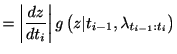 | ||
| 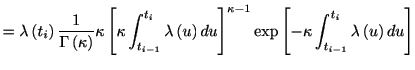 |
平均・分散 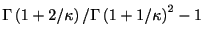の標準ワイブル分布は
| 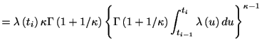 | ||
| 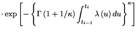 |
同様にして, 逆ガウス分布に従うリニューアル過程は, 平均・分散の標準逆ガウス分布
| 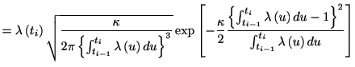 |
条件付きスパイク密度分布が求まれば, これから瞬間スパイク生成率(ハザード関数)が求まる.
瞬間性スパイク生成率 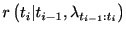が求まれば, 非定常リニューアル過程であっても非定常ポアソン過程としてあつかえる. 非定常ポアソン過程の時と同様に を積分すると
このアルゴリズムによる数値シミュレーションの結果を示す.
| 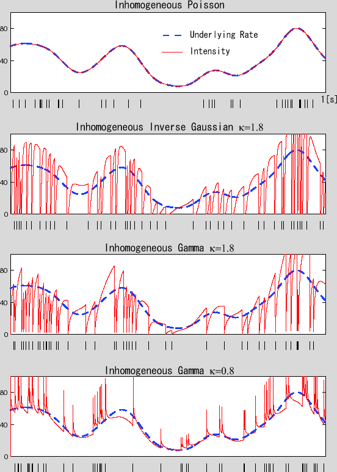 |
使用したMatlabのコード. 数値積分は台形則を用いている.
function [x,rs] = PointProcess_Renewal(y,dt,ISI,k)
% [x,rs] = PointProcess_Renewal(y,dt,ISI,k)
% Function `PointProcess_Renewal' returns sample spike events
% from a time-dependent Renewal point process.
%
% Example usage:
% dt = 0.001; t = [0: dt: 1]; % Time resoluation and time-axis.
% y = 10*(1+cos(2*pi*1*t)); % Time-dependent spike-rate.
% k = 2.3; % Shape parameter.
% x = PointProcess_Renewal(y,dt,'Gamma',k)
%
% Input argument
% y: A vector that specifies a time-dependent spike-rate.
% dt: Sampling time of the time-dependent rate.
% ISI: Type of Inter-spike Interval (ISI) distribution.
% 'Gamma', Gamma distribution.
% 'InvGauss', Inverse Gamma distribution.
% 'Weibull', Weibull distribution.
% k: The shape parameter of the ISI distribution.
% * To use small k << 1, use small sampling time dt.
% * Maximum k allowed is ~10.
%
% Output argument
% x: Spike time.
% rs: Intensity function.
%
% See also RASTER STOCHPROCES_GAUSS
%
% Copyright (c) 2007, Hideaki Shimazaki All rights reserved.
% http://2000.jukuin.keio.ac.jp/shimazaki
%%%%%%%%%%%%%%%%%%%%%%%%%%%%%%%%%%%%%%%%%%%%%%%%%%%%%%%%
%Initialize parameters
global invGammak;
invGammak = 1/gamma(k);
L = length(y);
x = zeros(1,round(mean(y)*L*dt + sqrt(mean(y)*L*dt)*3) );
rs = zeros(1,L);
z = 0; P = 0; R = 0; j = 1; c = 1;
yb = y(1);
pb = y(1) * feval(ISI,0,k);
pb2 = pb;
rb = 0;
rs(1) = pb;
eta = - log(rand);
for i = 2: L
%if eta > R
z = z + (yb+y(i))/2*dt; %Time-rescale
yb = y(i);
p = y(i) * feval(ISI,z,k); %ISI
%P = P + (pb+p)/2*dt;
if c == 1
P = p*dt;
elseif c == 2
P = (3/2*pb-1/2*p)*dt; %Semi-open
P = P + (1/2*pb+1/2*p)*dt; %Trapezoidal
elseif c == 3
P = (23/12*pb2-16/12*pb+5/12*p)*dt;
P = P + (1/3*pb2+4/3*pb+1/3*p)*dt; %Simpson
elseif c == 4
P = (55/24*pb3-59/24*pb2+37/24*pb-9/24*p)*dt;
P = P + (3/8*pb3+9/8*pb2+9/8*pb+3/8*p)*dt; %Simpson 3/8
else
P = P + (1/2*pb+1/2*p)*dt;
end
pb3 = pb2; pb2 = pb; pb = p;
r = p / (1 - P); %Intensity
R = R + (rb+r)/2*dt;
rb = r;
if eta > R
c = c + 1;
else
x(j) = i*dt; j = j + 1; %Spike time
z = 0; P = 0; R = 0; c = 1;
yb = y(i);
%pb = y(i) * feval(ISI,0,k);
rb = 0;
eta = - log(rand);
end
rs(i) = r;
end
x = x(x~=0);
if length(x) < sum(y*dt) - 3*sqrt(sum(y*dt))
disp('Warning. Better to increase sampling resolution');
end
%%%%%%%%%%%%%%%%%%%%%%%%%%%%%%%%%%%%%%%%%%%%%%%%%%%%%%%
% Inter-spike Interval distributions
function y = Gamma(z,k)
global invGammak
if k == 1
y = exp(-z);
elseif z == 0 && k < 1
y = 0;
else
%y = 1/gamma(k) * k * (k * z).^(k-1) .* exp(-k*z);
y = invGammak * k * (k * z).^(k-1) .* exp(-k*z);
end
function y = InvGauss(z,k)
if z == 0
y = 0;
else
y = sqrt( k/ (2*pi*z.^3) ) * exp( -k/2/z * (z-1)^2 );
end
function y = Weibull(z,k)
if z == 0 && k < 1
y = 0;
else
y = k*gamma(1+1/k)*(gamma(1+1/k)*z)^(k-1) * exp(-(gamma(1+1/k)*z)^k);
end
リスケールした時間軸上で平衡リニューアル過程を考えればよいだろう. リスケールした軸上で初期スパイクのスパイク密度分布は